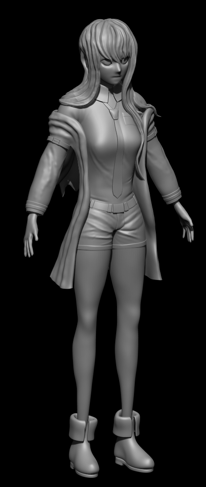
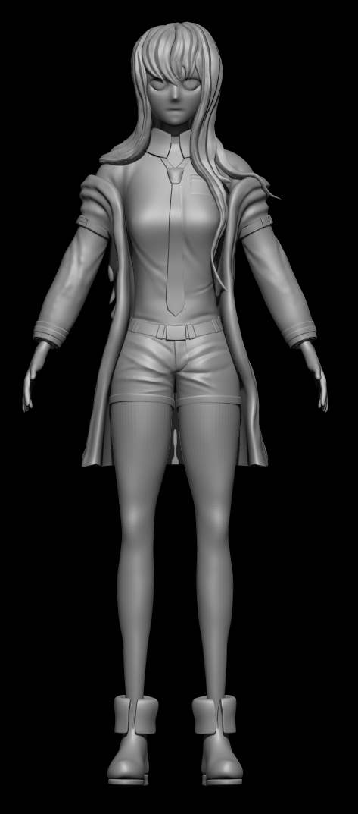
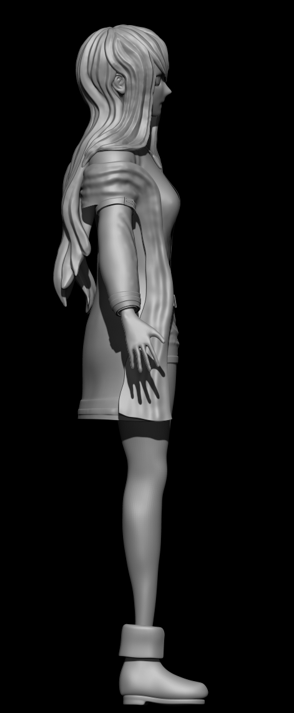
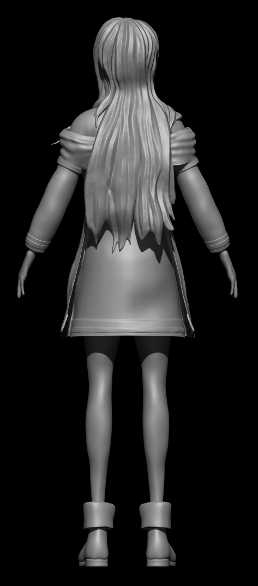

MKAISE SCULPT
- ZBRUSH
- PRACTICE
This work-in-progress sculpting project focuses on animated character design, with an emphasis on facial proportions, clothing, and stylized body anatomy. Through this project, I am using ZBrush to study the full workflow of character creation, from basic forms and proportions to detailed modeling and refinement.
This work-in-progress sculpting project focuses on animated character design, with an emphasis on facial proportions, clothing, and stylized body anatomy. Through this project, I am using ZBrush to study the full workflow of character creation, from basic forms and proportions to detailed modeling and refinement.



